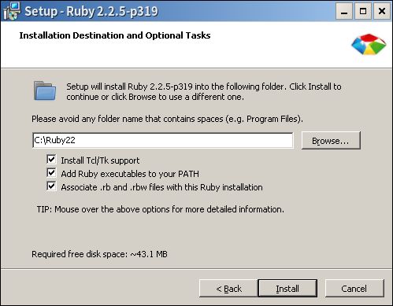

Ruby課程複習
林品儒
2017/03/03
基本概念
程式
以特定指令使電腦運行想要的動作
可以以程式語言編寫
用電腦可以解讀的語言命令之
程式語言
利用標準化的指令定義電腦的行動
但是比電腦更早被發明出來
讓人類可以指揮電腦
Ruby
開發者希望大家可以快樂寫程式
完成一件事情可以用很多方法達成
由日本人所開發
Ruby程式執行
先將文字檔轉換成特殊的位元碼
再用程式直譯該編碼
先編譯後直譯
使用VM來運行程式
hello, world
直譯器
為了執行Ruby的程式我們需要直譯器
Windows: RubyInstaller
Mac:$ brew install ruby
Linux:各家安裝ruby套件即可
版本選擇
推薦使用2.0以上的版本
有一定的了解再使用x64版本
就用Ruby2.2.5吧
安裝說明
為防止有個萬一還是說明安裝流程
其實就是Enter大法
選擇安裝語言

只有英文和日文可以選
就選英文吧
同意許可證

Ruby為自由軟體就安心同意吧
額外選項
第一個可以不用
但是PATH和檔案關聯建議打開
等它安裝

安裝完成

接下來就可以使用了
使用Ruby
Start Command Prompt with Ruby
Interactive Ruby
執行檔案
要對電腦路徑稍微熟悉
基本的CMD/TTY操作要會
先不要用這個
互動模式
使用irb為工具
輸入程式後就會產生結果
可以專心在語言的熟悉上
hello, world
先進入irb後輸入以下指令
print "hello, world"就得到一行輸出結果
hello, world=> nil踏出第一步
上面就是一個簡單的程式了
就是叫直譯器印出hello, world這幾個字
至於nil我們之後會再討論
基礎型別
類別
Ruby是一種物件導向的語言
物件必有其屬於的類別
每一種類別會有屬於自己類別的功能
基礎類別
Ruby提供了基本的類別讓使用者使用
使用這些類別就能做到很多事
nil是什麼

nil和0是不一樣的
列表
- Numeric
- Integer
- Float
- TrueClass/FalseClass/NilClass
- String
- Array
- Hash
- ...
物件與參考
物件
Ruby的基本單位
實際存在記憶體中的資料
可以對其進行相對應的操作
變數
在Ruby中物件是沒有名字的
變數就是賦與物件一個名字
使用"="來指定變數指向的物件
使用小寫字母開頭就是變數
也可以使用非英文或數字(不建議)
參考
英文為reference
讓變數或其他物件可以連結到某物件
"代表"某個存在的物件
賦值
讓變數參考到物件
count = 10
str = "string"
狐狸 = "fox"
圖解
a=b=5566
"Hello,World"

常數
變數可以多次指派而常數不行
就是用來存放不會變的資料
大寫字母開頭皆為常數
小結
小心兩個變數指向同一個物件的狀況
一個變數只能參考到一個物件
沒有被參考的物件又是另一個故事了
數字相關
數字相關
數字有整數和浮點數
Interger
Float
整數
Integer
可以處理非常大的數字
有很多種方法表達整數
整數表達
十進位: 5566,22_000
八進位: 0755,0422
二進位: 0b11001101
十六進位: 0xC8763,0xdeadface
牛刀小試
到底0xC8763在10進位下是多少
0b111,0111,111,0x111
大數
大家可能對這個詞比較不熟悉
電腦一般儲存數字大小是有限制的
能夠不具大小限制的處理就稱為大數
可以當成整數來用
浮點數
Float
浮點數可以近似表達小數
整數和浮點數運算會變浮點數
浮點數也有很多表達方法
浮點數表達
科學記號: 8722.78e6,9.109E-31
小數點: -0.3010,866.6
特殊的NaN,Infinity,-Infinity
四則運算
數字間的運算俗稱四則運算
不過並不只有四種功能
自動轉型
整數和整數運算是整數
但是和浮點數有關就是浮點數
加法
"+"號
浮點數和整數可以混合運算
減法
"-"號
一樣可以混合運算
乘法
"*"號
注意不是使用英文子母"x"
x不代表乘法
0x0
這是0
0x16
但這個並不是0
除法
"/"號
注意"\"不是除法
整數除以整數恆為整數
除法特例
整數除以0會發生錯誤
100/0
1.0/0
0.0/0
取餘數
"%"號
四則運算中的第五個運算
也要小心整數對0取餘數
指數
"**" 2個"*"號
最刺激的運算
可以開根號或求倒數
牛刀小試
1+2*3-4
(1+2)*(3-4)
2**0.5
5**-1+4**-1
9999**9999
字串
字串
String
可以放入各種文字
Ruby原生支援UTF-8編碼畢竟要支援日文
之後會有更詳細的介紹
空字串
當字串中沒有任何字就是空字串
雖然沒放東西但本身還是字串
可以對它進行字串操作
字串表達
字串有許多種表達方式
這也是Ruby的一個特色
上次的Hello World就有用到字串
單引號表達
「'」號來夾住想要表達的文字
最直接的字串表示
'Hello, World'
雙引號表達
「"」號夾住想要的字串
比單引號的字串多了些功能
要特別注意其使用
"Hello, World"
竄寫
有時候想要在字串中放入運算結果
把運算寫在字串裡是最快的方法
"1+1=#{1+1}"
使用#{}包住想要的運算
牛刀小試
print "#{200+100}"
print "200+100"
print '#{"String!!"}'
print "#{"String!!"}"
[]
取出字串中特定位置的字元
索引為整數 也可為負
索引從0開始
"Hello,world"[1]
[]=
可以把字串放進去字串的操作
不能超出原先的範圍
"Hello,world"[-1]="D"
取得字串長度
取得字元個數:size,length
取得位元組數:bytesize
有用到非英文字元就會不一樣
常用方法
函式
英文為function
從外部輸入資料後進行處理
不一定回傳運算結果
方法
英文為method
處理的資料除了外部進來還有內部的
操作某個物件內部的數據
p
印出東西並且回傳原值
用來debug很好用
可以印出字串內部表示的樣子
p '"'
印出字串並回傳nil
不需要換行時可以使用
puts
也是印出字串回傳nil
需要換行時使用就可以不用自己換行
gets
使用gets可以輸入字串
由於會把換行吃進來所以要額外處理
注意是得到字串歐
牛刀小試
p gets
p "hello, world"
print "hello, world"
puts "hello, world"
陣列
陣列
Array
注意是陣列不是矩陣(Matrix)
可以依照索引放入任何東西
裏面也可以裝陣列
用途
用來放有順序相關的資料
或是當一個集合來使用
也可以當作有秩序的序列容器
陣列表達
使用中括號可以表達一個陣列
["a","b",nil,3,[true,false]]
記得元素中間要使用逗號隔開
陣列的內部設計
ary=[100,"cat",nil,"cat",true]

注意裏面的兩隻貓是不同隻貓
[]
又是這個中括號了
一樣可以取用索引值的資料
其實還有更深的用法請自行查閱
[]=
用來指派陣列某索引位置的元素
可以超出陣列原先的範圍
!!注意!!注意陣列的索引數值大小
陣列長度
Ruby的陣列是知道自己長度的
使用size或length取得長度
磨刀霍霍
體驗記憶體爆炸的快感
ary=[]
ary[100_000_000]=0xC8763
ary[100_000_000]
ary.size
ary[1e12]=8787
符號
符號
Symbol
Ruby中特殊的物件
同樣的符號在記憶體中是指同一個物件
!!注意!!一樣的字串不一定是一樣的物件
內部設計
輸入一個符號之後直譯器會尋找是否已經存在
沒有的話就建立一個新的符號
有的話就使用原來的符號
用途
因為物件不存在其他與之相同的物件
用來做雜湊的查詢
直譯器內部運作
符號表達
使用":"加在字串前
:"Only One"
使用":"後接符合變數或常數命名法的文字
:NTNUCIC,:bad_apple
牛刀小試
p "Hello, World".class
p :"Hello, World".class
注意字串和符號是不一樣的歐
雜湊
雜湊
Hash
用來存放鍵(key)值(value)配對的容器
C++的Map,Java的Hashtable,JS的Object
使用雜湊函數存取映射在表格中的數據
用途
可以使用非整數的索引來查詢資料
以類似於命名的方式來存放有相關的資料
表達方式
使用"{}"大括號包住 鍵"=>"值 的配對
{"name"=>"L5640","core"=>6,"thread"=>12}
鍵和值可以為任意物件
{nil=>8,0=>false,"true"=true}
和符號搭配使用
雜湊是利用雜湊函式查詢鍵所對應的值
使用字串當作鍵時需要"計算"雜湊值
使用符號則不需要計算
同時也可以漸少記憶體浪費
符號作為鍵
原本的寫法一樣可行
{:name=>"R7-1800X",:core=>8,:thread=>16}
可以將其縮寫
{name:"R7-1700X",core:8,thread:16}
[]
以鍵來查詢雜湊中的值
沒有該值則會回傳預設值
[]=
將鍵和值的配對存入雜湊
可以把舊的值蓋掉
比較運算
比較運算
可以在不同物件之間比較
可以有相等或是大小之分
會回傳真假值作為結果
真假值
true,false,nil可以表達真假值
其中false和nil永遠代表為假
其他的數值就算不是true也為真
用來進行條件判斷
真假值表示
true,TRUE
false,FALSE
nil,NIL
以上都小寫或都大寫
相等比較
在Ruby中有不同種類的相等比較
最簡單的就是比較兩個物件的值
也可以比較兩個物件是否為同個物件
還有更廣的比較
不相等
兩個物件值不一樣就是不相等
!=
反而相等的狀況更為複雜...
相等
比較兩個物件的值是否相等
== (注意不是賦值的單一"="號)
比較兩個物件的值和類別是否相等
eql?
比較兩物件是否為同一物件
equal?
物件id
之前有提到物件其實就在記憶體某處
物件的ID就代表了物件的位置(指標)
藉由比較ID可以判斷兩物件是否為同一物件
牛刀小試
1==1.0
1.eql? 1.0
[].equal? []
比大小
數字之間能互相比大小
字串之間也可以比大小
但是數字和字串不能比大小
小心兩個物件的類別
種類
<：小於
>：大於
<=：不大於
>=：不小於
<=>：看前後的大小回傳1,0,-1
牛刀小試
'Z'>'B'
'Z'>'b'
'100'<=100
11<10.9
分支指令
分支指令
利用條件判斷在不同狀況下執行不同程式
可以設計出原先循序做不到的程式
if
最簡單的分支指令
if(cond)[then]
do_something
end條件符合才做事
then可省略且一定要加上end
if/else
二選一
if(cond)[then]
do_something
else
do_others
end再次提醒不要忘了end
if/elsif/else
可以有很多種選擇
if(condA)[then]
do_things_A
elsif(condB)[then]
do_things_B
...
[else
do_others]
endelse不一定要出現且注意是elsif
多重條件比對
有時候elsif寫起來實在不明確
比對列舉的條件
該是關聯運算子出場的時候了
case/when/else/end
可以和if/elsif/else視情況選用
case(obj)
when val_A [then]
do_things_A
...
else
do_others
end一樣then可以省略且記得要加上end
迴圈與迭代
迴圈
重複執行相同或是類似的動作
程式除了往下跑還可以往回跑
範圍運算子
可以表達兩個數字的區間
a..b代表[a,b]
a...b代表[a,b)
會得到一個Range物件
for敘述
可以迭代目標中的每一個元素
在範圍運算子上使用就是數字迴圈
for i in 0..10
print i
end上面就是一個從0代入到10的for迴圈
while敘述
可以設定中指條件的迴圈
用在不知道需要執行幾次的時候
while(cond)[do]
do_something
enddo和小括號都可以省略
區塊
英文為block
一個可以將周圍環境傳入的特殊物件
呼叫方法有可能需要傳入區塊
loop方法
單純的無限迴圈
loop {
do_something
}loop do
do_something
endtimes方法
可以指定要重複多少次
5.times{ p :dimand }
也可以得知目前的數字
6.times{|i| p i }
注意數字是從0開始
each方法
其實for敘述就是使用這個方法
可以從物件的集合逐項取出資料
陣列、雜湊和範圍物件都可以使用
[:cat,:fox,:dog,:wolf].each{|ear|
puts ear
}各式物件迭代
有很多物件具有可以逐項處理的功能
Range 取出範圍內整數
Array 對所有元素進行不同操作
String 以字元或位元進行操作
Hash 對鍵值逐項操作
介紹迭代功能
因為此類功能眾多在此只舉一些例子
陣列的each_with_index方法
陣列的map,map!方法
陣列的sort_by!方法
each_with_index
和each方法很像但是會額外告知已迭代次數
list.each_with_index{|e,i|
puts "element %d is at %d"%[e,i]
}map
此方法有會改變自己的map!方法
也有回傳新陣列的map方法
[1,2,3,4].map{|n|
n**2
}會收集區塊每次的運算結果
sort_by!
會先計算區塊中的值再以該值來排序陣列
注意有驚嘆號結尾會改變自身
["a","ab","cdf","emmc"].sort_by!{|v|
v.length
}上面的例子就是依照長度排序